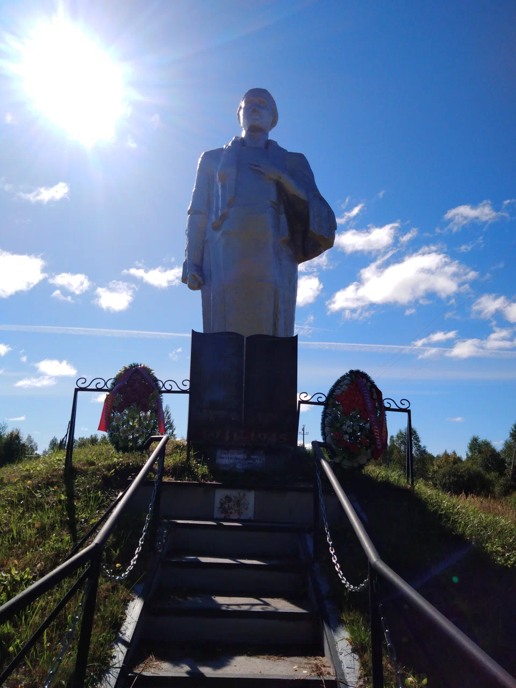

Сойма
География
Сойма располагается в 18 километрах от центра Головинского сельского поселения, в которое и входит. Рядом с деревней протекает река Сойма - приток Войнинги.
История
Об истории этого места пока не найдено никакой информации.
Происхождение названия
Название деревни происходит от гидронима – реки Соймы, на котором и расположен населенный пункт.
Значение названия
Само название реки, по финно-угорской версии, обозначало что-то, связанное с водой или средствами передвижения по воде: soima, soim – большая лодка. У хантов и манси сойм (соим) означало ручей. Конкретно река во Владимирской области скорее всего имеет финно-угорское происхождение.
Вернуться на карту

Памятник войнам, павшим в годы Великой Отечественной войны